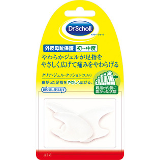

返回列表
产品名称：ドクター・ショール クリア・ジェル・クッション（スリム）［トー・セパレーター］

レキットベンキーザー・ジャパン ドクター・ショール クリア・ジェル・クッション（スリム）［トー・セパレーター］ ３個
メーカー レキットベンキーザー・ジャパン
JANコード 4906156400397
商品の特徴
外反母趾保護 初～中度
やわらかジェルが足指をやさしく広げて痛みをやわらげる
曲がった足指をやさしく広げる。
繰り返し使えます
親指が内側に曲がった状態
成分・分量
ポリマージェル
用法及び用量
＜使用方法＞
1．足をよく洗い、よく乾かしてから親指と第2指の間にはさんでご使用ください。
2．べたつきが気になる方はパウダーを本品に散布してお使いください。
3．つり金型を上にしてお使いください。